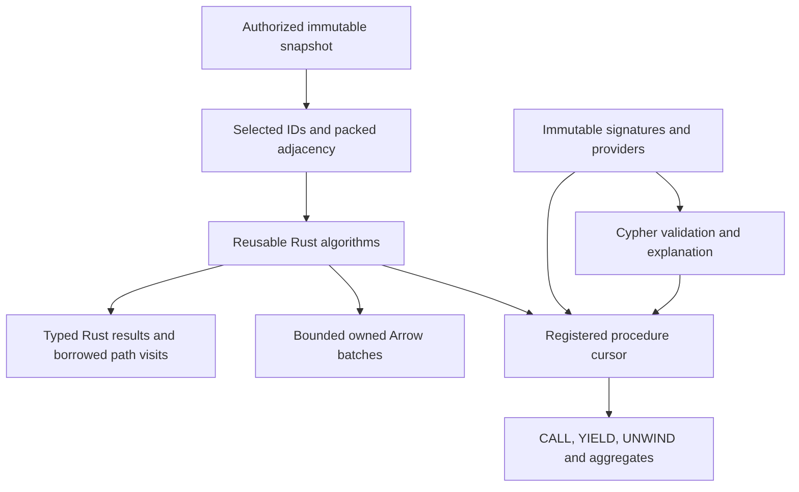

Acorn adds graph analytics to Grust’s backend-neutral property-graph API. Applications prepare an explicit immutable snapshot, run a Rust kernel, and choose Rust, Arrow or ordinary Cypher consumption. Algorithms do not own a database connection or choose another graph. Memory and private Turso snapshots demonstrate the same prepared query against two independently captured sources.

grust-algorithms has no Cypher dependency.
grust-procedures owns signatures, providers, checked
cursors and the shared execution budget. The
grust-algorithm-procedures crate connects them. An
application can register an independent provider without changing the
parser, analyzer or executor. The facade exposes these through
algorithms, cypher and optional
arrow features.
[dependencies]
grust = { package = "grust-graph", version = "0.20.0", features = ["algorithms", "cypher", "arrow"] }Register the desired providers once and retain the immutable registry:
use grust::{algorithm_procedures, procedures, CypherParameters};
let mut builder = procedures::RegistryBuilder::default();
procedures::register_builtins(&mut builder)?;
algorithm_procedures::register_algorithms(&mut builder)?;
let registry = builder.build();
let result = grust::run_read_query_with_registry(
&graph,
"roads",
"CALL grust.algorithms.dijkstra('start', {weightProperty: 'cost'}) \
YIELD nodeId, distance RETURN nodeId, distance",
&CypherParameters::new(),
®istry,
)?;Here graph is a caller-owned grust::Graph.
A bounded query additionally opts into
ReadQueryPolicy::allow_read_procedures; catalog permission
alone cannot admit analytics. For a backend capture, construct a
LocalSnapshot after access checks, with an explicit graph,
revision and principal. A prepared plan rejects a different graph name
before invoking a provider. The capability pins data; the identity
strings do not grant access.
For direct Rust, create an ExecutionContext with
memory/work limits, batch size and optional deadline.
GraphProjection::from_graph accepts label selection,
orientation and a weight policy. from_topology accepts
external IDs and typed edges; from_arrow_batches reads
typed columns directly. Kernel results share the projection, so dropping
the caller’s projection handle cannot invalidate IDs. Runnable source
examples are weighted_paths in
grust-algorithms and custom_procedure in
grust-cypher.
All procedure names below have the prefix
grust.algorithms.. They call the same kernels as direct
Rust and have typed Arrow result adapters.
| Operation | Contract |
|---|---|
bfs |
Hop distances from one external source ID |
multiSourceBfs |
Minimum hop distance from a nonempty source array |
dfs |
Deterministic reachable-node discovery order |
dijkstra |
Distances with finite nonnegative weights |
shortestPaths |
One selected full shortest path per reachable target |
wcc |
Weak components, including isolates |
scc |
Directed strong components with iterative traversal |
degree |
Exact projected arc counts and optional weighted strength |
pagerank |
Weighted scores, residual, iterations and convergence status |
topologicalSort |
Complete DAG order or a concrete closed cycle witness |
projectionStats inspects selected topology.
estimateCsr reports nominal adjacency-buffer upper bounds
from snapshot counts, excluding graph storage, ID maps, original edge
tables, kernel scratch, output and allocator overhead. Selection can
reduce those counts. The estimate is not total memory admission.
The common configuration keys are orientation,
nodeLabels, relationshipTypes,
weightProperty and defaultWeight. Unknown keys
fail. Null label arrays select all labels; empty arrays select none.
Edges crossing outside the selected node set are excluded, while
selected isolates remain. Orientations are outgoing, incoming and
undirected. Undirected loops contribute one traversal arc; other
undirected edges contribute two. Parallel edges remain distinct.
Topology algorithms ignore weights after projection validation.
Weights must be finite and nonnegative. Integer weights outside
0..=2^53 are rejected rather than rounded. Missing or null
weights fail unless a finite nonnegative default is explicitly supplied.
Unit projections omit weight storage. Dijkstra uses strict improvement
and stable adjacency order for equal costs; zero-weight ties cannot
create predecessor cycles. Reachable cost overflow is an error.
Unreachable distances are infinity in direct Rust and null in
Cypher/Arrow. Component IDs are the external ID at the minimum
projection row in each component.
degree returns every selected node, including isolates.
Direct Rust degree(&projection) exposes exact
usize counts and optional f64 strengths. Arrow
columns are nodeId: Utf8, degree: UInt64, and
nullable strength: Float64; Cypher returns an exact checked
integer count and null strength for unweighted projections. No
normalization is implicit.
CALL grust.algorithms.degree({orientation: 'incoming', weightProperty: 'cost'})
YIELD nodeId, degree, strength
RETURN nodeId, degree, strengthCounts include parallel and zero-weight arcs. Undirected loops count once under this projection contract. Weighted strength sums finite nonnegative weights; overflow fails explicitly. Negative weights remain unsupported. Unweighted execution reads existing CSR offsets in O(V); weighted execution takes O(V+A). Result buffers retain the shared memory admission, and bounded work-accounting chunks preserve cancellation polling without a lock per scalar. This contract does not establish universal degree-centrality compatibility with other engines.
PageRank defaults to damping .85, L1 tolerance 1e-8 and 1000 iterations. Scores start uniformly. Optional personalization controls teleportation and dangling mass; zero outgoing weight is dangling. Parallel edges contribute separately. Finite large weights are scaled before sums. Iteration-limit results explicitly report non-convergence. Seeds, community algorithms, negative-weight paths, all-pairs/k-shortest paths, flow, similarity and ML are deferred; the current catalog is not universal GDS compatibility.
A full path contains source-first external node IDs and cumulative costs beginning at zero. Original edge ordinals identify the selected multigraph edges. The zero-hop source path is included; unreachable targets are omitted.
CALL grust.algorithms.shortestPaths('start', {weightProperty: 'cost'})
YIELD nodeIds, costs
UNWIND range(0, size(costs) - 1) AS i
RETURN count(nodeIds[i]), sum(costs[i])
LIMIT 1This query consumes every actual requested array element. LIMIT bounds the final aggregate output, not its input. The executor incrementally handles CALL/YIELD filters, simple WITH, UNWIND, plain RETURN and ungrouped COUNT/SUM/AVG. Generic array/index aggregation avoids allocating a binding row for every path element. It does not recognize a benchmark graph or substitute a closed-form answer. Other shapes use the existing budgeted materializing executor. Grouping, sorting, DISTINCT and collecting have no spill implementation and may exceed admission. Early LIMIT can stop consumption, but a global kernel may already have computed its result before producing the first batch.
One shared execution context accounts for projection buffers, scratch, provider results and downstream intermediates. Reservations stay attached through internal ownership transfers. Temporary consumed values release live admission; legacy materializing operators retain cumulative-copy accounting. Cancellation, deadline and work checks span preparation, kernels, reconstruction and consumption. Execution is synchronous without prefetch or parallel kernel workers.
Borrowed path visitor slices expire when the callback returns. Pull cursors reuse scratch storage. Owned scalar batches retain admission through wrapper clones. Brine 0.20.0’s Arrow ownership extension also retains algorithm-result admission through raw batches, buffer slices and nested children; shared physical buffers keep the original reservation without charging each clone again. Full paths and cycle/order arrays use LargeList offsets with explicit limits. An individual oversized path fails instead of truncating. Caller-owned input and externally retained legacy result tables require caller admission; logical accounting is not a process RSS sandbox for untrusted provider code.
db.procedures describes the final registry generation,
including argument and option defaults, outputs, provider identity,
modes, correlation and computation boundary. Prepared explanations use
the same definitions and consumer classifier.
explain_snapshot also identifies the admitted revision and
principal without running algorithms. These are Rust planning methods; a
literal Cypher EXPLAIN prefix is not added by this extension.
Projection reuse is query-scoped and keyed by snapshot, principal, representation, selection, orientation and weight policy. Correlated CALL still executes once per incoming row; caching preparation does not cache algorithm answers. Reverse SCC adjacency is built lazily and stores only topology, without duplicate weights or edge identities. Projections retain their selection policy for inspection.
The current procedure executor accepts an explicitly selected local snapshot. Backend-native execution is rejected when unsupported, with no automatic whole- graph download. Memory and a private Turso database have snapshot integration proofs, including reads from old captures after later writes. Arbitrary external writers, remote snapshot stability and native analytics are not thereby qualified. Mutation/write-back needs a separate atomic transaction design and remains absent.
Both local direct Rust and ordinary Cypher completed the 65,536-node full-path chain, consuming 2,147,516,416 entries in each array. Those single observations have disclosed process envelopes and differ from the frozen Docker protocol. The repository retains independent small-graph oracles, source/binary receipts, frozen baseline results and current qualification status. See the coverage and resource contracts and benchmark evidence.